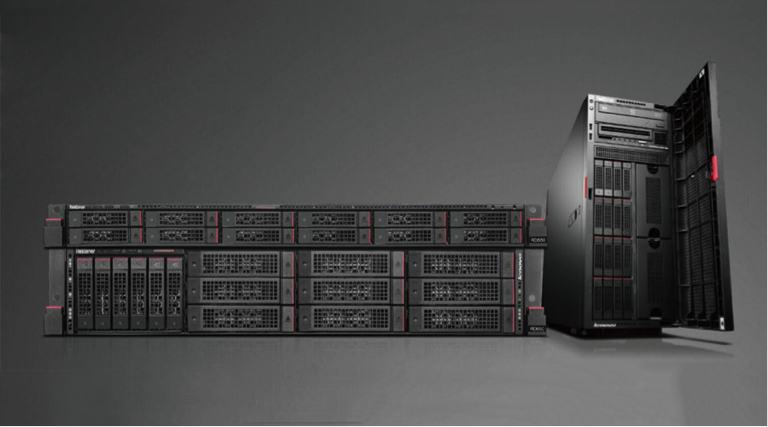
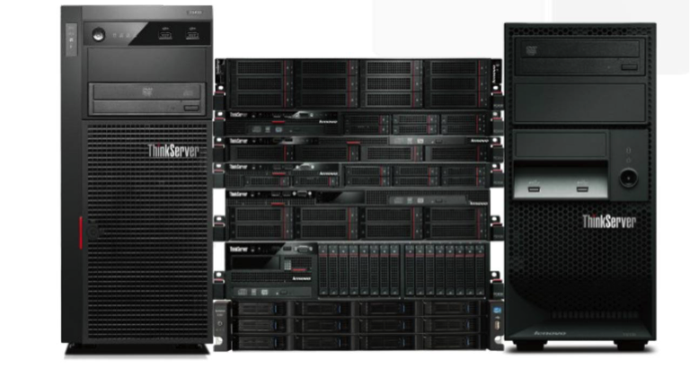

升级不停机，这是怎么做到的？
事情是这样的：
老板说
公司正在开拓新业务，IT系统得赶紧升级啊
▼
业务说
要升级系统？千万可别停机啊！要不活儿就没法干了！
▼
我说
那个...咱们现在的IT系统既要升级又要不停机...
臣妾做不到啊
▼▼▼
怎么办怎么办怎么办！我只好先交辞职报告了！
然后我看到了这个……
“在我们的新系统部署期间，用户不会注意到任何改变，操作几乎以无缝方式完成。 ”——联想美国现场支持高级经理 Walter Jones
▼
是的你没有看错，就是那个人超级多、地盘超级大、业务超级复杂的联想……可是联想如何做到无缝升级部署、毫不影响业务的？
▼▼▼
从2009年到现在，联想从17,000 人增加到了 60,000 多人，成长为全球最大的个人电脑公司，业务覆盖 160 多个国家和地区，同时业务组合也扩展到企业级产品、 智能连接设备、 平板、手机等众多产品。那联想是怎么应对业务如此高速扩展带来的IT系统升级挑战的？
IT系统升级、整合压力大但，也不能停机！
联想在中国、美国、日本、巴西均设有大型研究中心，联想北京数据中心为联想的许多关键业务系统如电子邮件、开发制造工具等提供运营技术支持，包括特定国家和地区的应用程序及许多全球性应用程序。任何系统部署升级期间的停机，都有可能造成不可估量的损失。
联想北京数据中心IT系统面临的升级挑战主要有两个：为保持领先优势，联想需要采用更加高效而成本低廉的基础架构解决方案，改造出响应更加快速的 IT 系统；同时，联想北京数据中心支持着许多全球、亚太地区的关键应用，还要将两次重大收购之后带来的IT系统整合进去。这一切，都需要快速、无缝的完成。
成功高效无缝部署新架构联想亲身实践出经验
联想在北京数据中心部署了基于联想服务器、 联想存储解决方案和虚拟化技术的新基础架构解决方案。
该方案可靠性较高，拥有第三方验证、并且兼容一系列应用程序和虚拟化技术，开箱即可提供高可用性和可管理性，并在虚拟化环境中运行联想电子邮件、开发制造工具等多种核心基础架构服务。使用新基础架构后，联想将虚拟环境支持的服务器数量提高了46%，但人员配置成本并未增加，大幅提高了整个公司的效率和成本效益。

该虚拟化基础架构平台能够自动检测问题区域并上报相关信息，帮助IT 团队提高请求响应能力。新的解决方案将部署一台新服务器的时间从一个月缩短到一周内的同时，还实现未来按需提供横向扩展能力，兼顾部署的速度与功能需求。

“使用该基础架构的好处在于 ，你只需要在它的性能不佳时关注到它。因此，关于新系统，我们收到的最佳反馈实际上是缺乏反馈。”
——联想美国现场支持高级经理 Walter Jones
这正是联想基础架构高效部署、升级无缝带来的最直观的的效果。未来，在业务增长需要时，联想可随时将北京数据中心实施新解决方案的经验用在其他数据中心上。
▼▼▼
我觉得这样的无缝升级部署非常靠谱
你的数据中心也可以